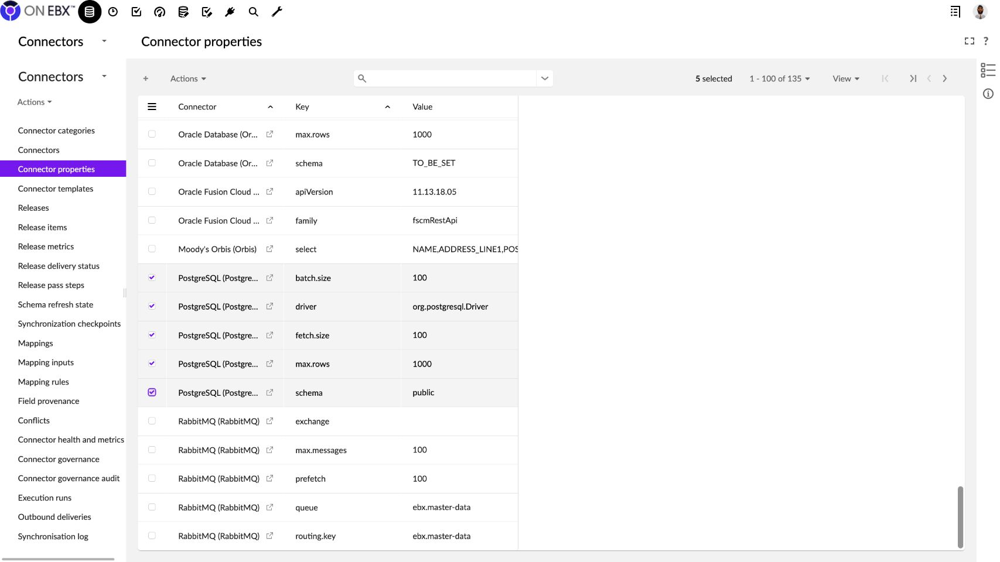
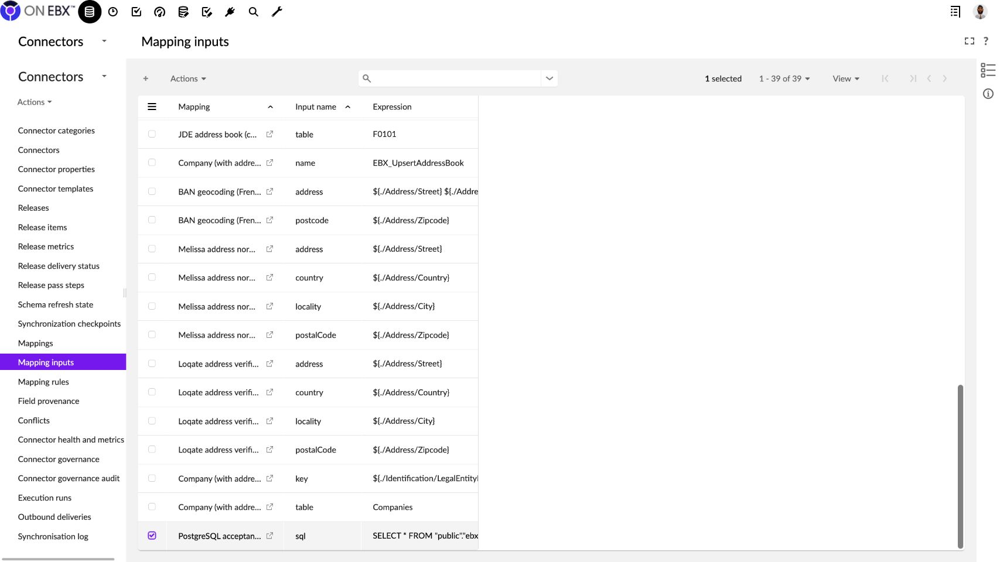
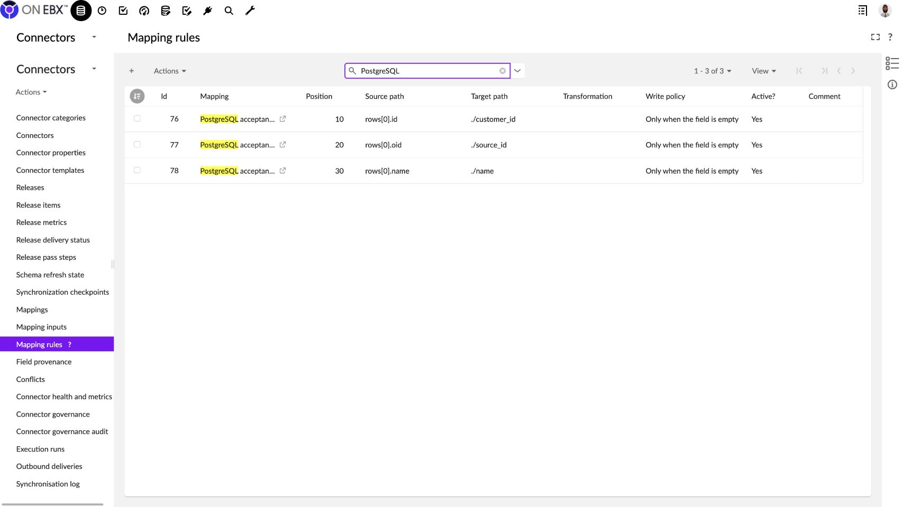
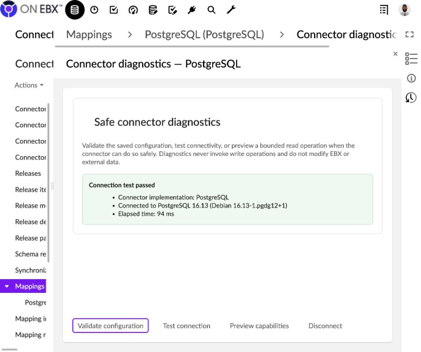
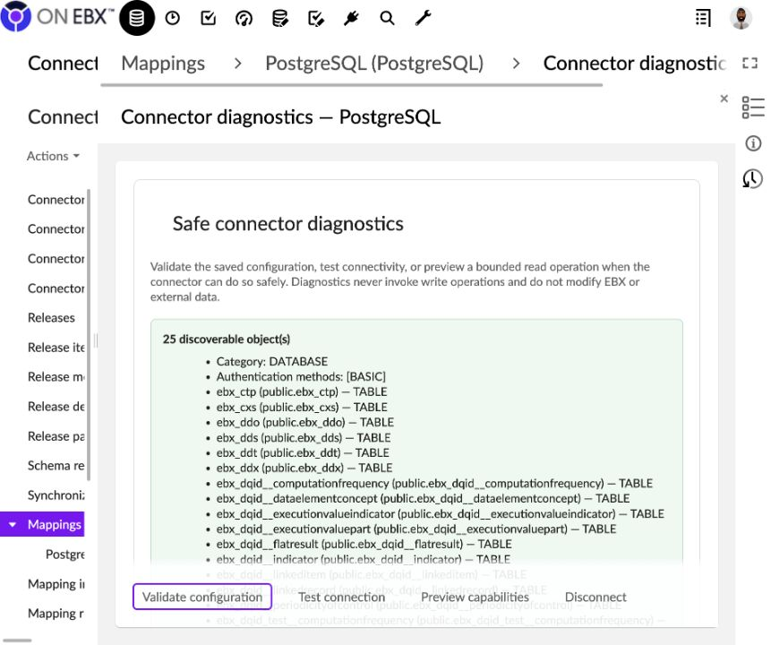
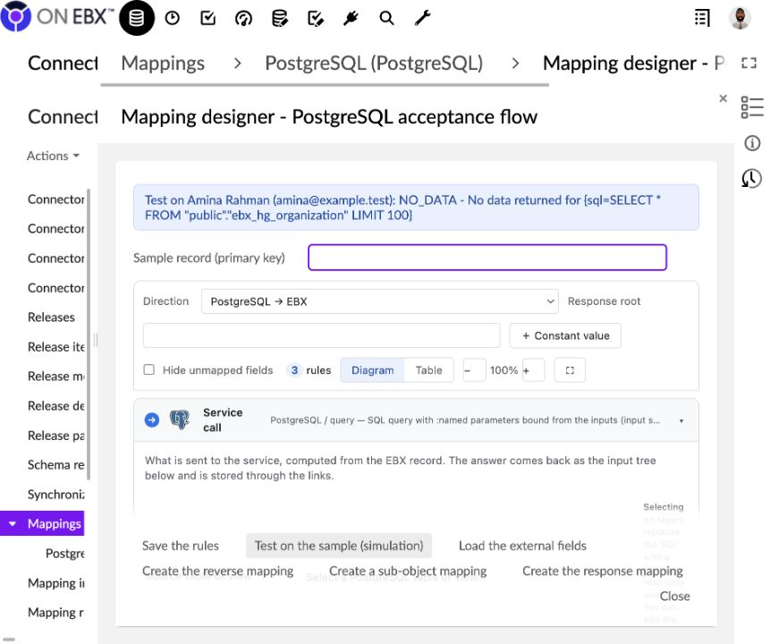

1. What the connector does
The dedicated PostgreSQL connector uses the shared bounded JDBC engine with PostgreSQL-specific validation and driver metadata.
Inbound
Query a view or table, bind named parameters safely, and import rows or aggregates into EBX.
Outbound
Insert, update, or upsert governed EBX records into separate destination tables inside a transaction.
Discovery
Browse schemas, tables, views, columns, keys, and types for mapping design and catalog feeds.
Safety
Bound result sets, use prepared parameters, isolate source and output tables, and test with a read-only account first.
2. Configure PostgreSQL
| Setting | Example / guidance |
|---|---|
| JDBC URL | jdbc:postgresql://host:5432/database; the dedicated connector validates the jdbc:postgresql: prefix. |
| Authentication | Basic database user/password stored in encrypted connector fields. |
| Driver | org.postgresql.Driver; PostgreSQL JDBC 42.7.x must be available at runtime. |
schema | Optional default schema such as public. |
max.rows | Default row limit used when a call passes no max input (1000 unless changed). |
max.rows.hard | Ceiling an explicit max input is capped at; unbounded by default. Before 2026-09-28 an explicit max was silently clamped to 10,000 regardless of what was asked for — set this property to restore a fixed ceiling if you rely on one. |
fetch.size / batch.size | Tune reads and writes without making transactions unbounded. |
jndi | Optional container-managed DataSource instead of a direct URL. |

3. Operations
| Operation | Inputs | Purpose |
|---|---|---|
query | sql plus named inputs | Prepared SQL query with :name parameters. |
get | table, key, value | One row by key. |
insert | table | Insert the outbound document. |
update | table, key | Update by key columns. |
upsert | table, key | Update, then insert when missing. |
execute | sql | Execute an approved statement with named parameters. |
catalog, profile, sample | source and filters | Inventory, statistics, and classification samples. |
4. Build mappings
For a bounded inbound read, select query, write SQL with named parameters, and expose only the columns required by the mapping. Never concatenate an input into SQL.
SELECT company_id, legal_name, country_code, lei, updated_at
FROM public.company_source
WHERE company_id = :companyId
ORDER BY company_id
LIMIT 1

For round trips, keep source tables immutable and write EBX-enriched values to separate output tables with explicit keys and referential integrity. Retain an audit table or synchronization log correlation.
5. Safe operating sequence
- Record the existing connector and mapping configuration before changing the endpoint.
- Run a diagnostic and verify PostgreSQL product metadata.
- Discover the intended schema/table and compare the five expected columns.
- Preview a three-row bounded query, then a one-row parameterized query.
- Prove invalid SQL is recoverable and the read-only fixture account cannot write.
- Simulate the existing mapping; inspect inputs, rules, counts, and proposed changes.
- For an approved round trip, import source rows, govern them in EBX, write only to output tables, and read them back independently.
- Restore the original connector configuration and rerun its diagnostic.

6. Catalog and profiling
Catalog uses JDBC metadata to emit tables/views and columns. Profile computes row/null/distinct/min/max/mean/length statistics, and sample returns distinct text values. Narrow scans by schema/table, set row-count behavior deliberately, and cap sample sizes.
7. Troubleshooting
| Symptom | Action |
|---|---|
| Driver not found | Deploy the PostgreSQL JDBC driver and confirm org.postgresql.Driver. |
| Schema/table absent | Check database, search path, case, grants, schema filter, and connector discovery refresh. |
| Query returns no data | Run the exact bounded SQL independently; confirm parameter type/value and committed fixture data. |
| Permission denied | Confirm intended read-only behavior or grant only the specific output-table privileges. |
| Unexpected writes | Stop, roll back if possible, review operation/table/key, and separate source from output tables. |
8. Evidence status
FIXTURE VERIFIED PostgreSQL 16 metadata, five-column discovery, prepared reads, invalid-SQL reporting, and SQLSTATE 42501 write denial were independently verified.
LIVE READ PATH VERIFIED On 2026-09-17 the existing PostgreSQL connector was temporarily pointed at the isolated fixture. EBX connected to PostgreSQL 16.13, discovered nine approved tables/views including the normalized Account sources and inbound view, previewed schema metadata, and returned a bounded three-record sample. The original localhost:5433/ebxdb configuration and credential were restored and EBX showed it connected.
ROUND TRIP PENDING The existing acceptance mapping still targets obsolete SQL (public.ebx_hg_organization) and does not implement the normalized Account import, stewardship, governed-output write, or read-back required by POSTGRES-09..12. No acceptance-only connector or mapping was created.

